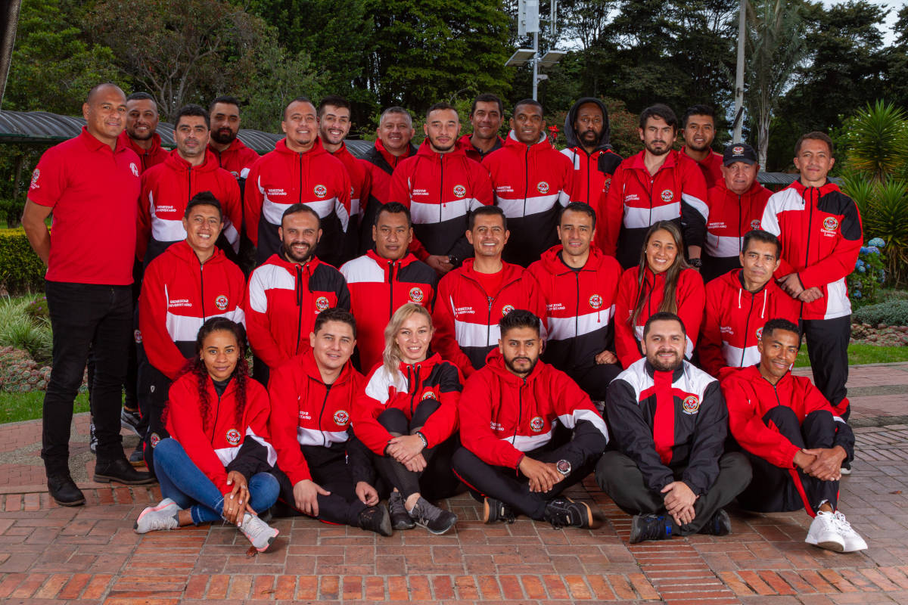

Bienestar Universitario - Área de Recreación y Deporte

Objetivos
Administrar de manera eficaz la difusión y fomento de diferentes actividades deportivas de la Universidad Libre, con el fin de propiciar una óptima utilización del tiempo libre, el esparcimiento y la distracción, por medio de eventos recreativos, deportivos y sociales.
Programas
- Nuestro Gimnasio
- Deporte Competitivo
- Deporte Recreativo
- Días Institucionales
- Olimpiadas Universitarias
- Torneo Deportivo Administrativo
- Caminatas Recreativas
- Talleres de formación deportiva
Equipos Competitivos
- Baloncesto (masculino y femenino)
- Voleibol (masculino y femenino)
- Fútbol (masculino y femenino)
- Ajedrez
- Tenis de campo
- Ultimate
- Atletismo
- Natación
- Taekwondo
- Tenis de mesa
- Fútbol Sala
Inscripciones
Anualmente se participa en los Torneos Universitarios de Ascun y los Cerros, Torneo Inter-empresas Cafam y otros eventos deportivos.
Para docentes, personal administrativo y estudiantes ofrecemos espacios deportivos propios para la práctica de las diferentes disciplinas en el Polideportivo, ubicado en la Sede Bosque Popular. Mediante convenio con otras instituciones se facilita la práctica de la natación.